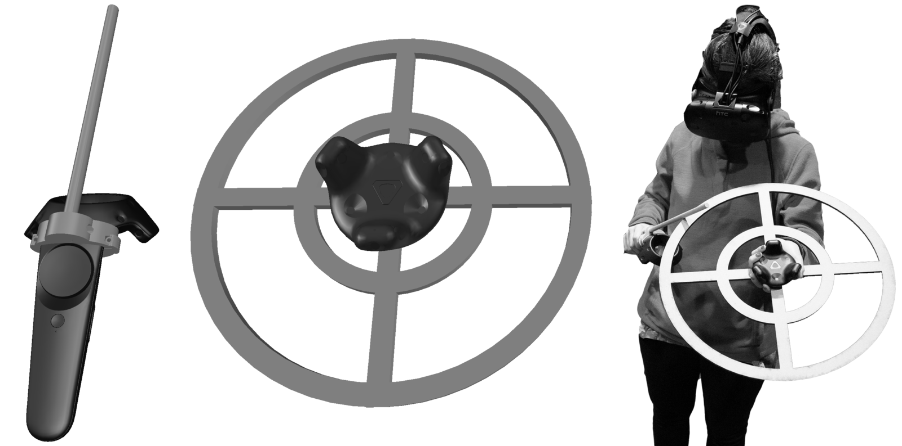
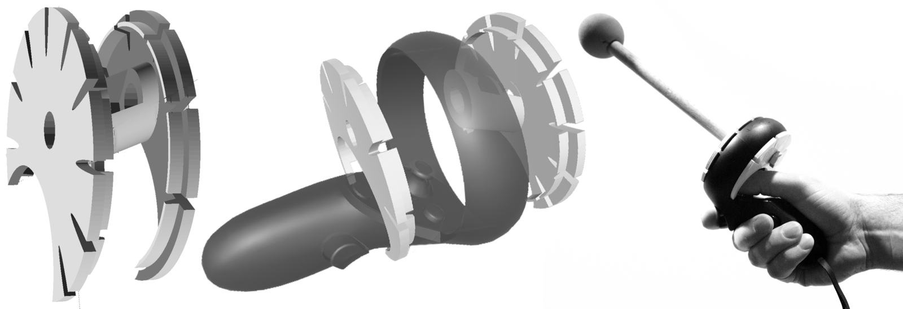
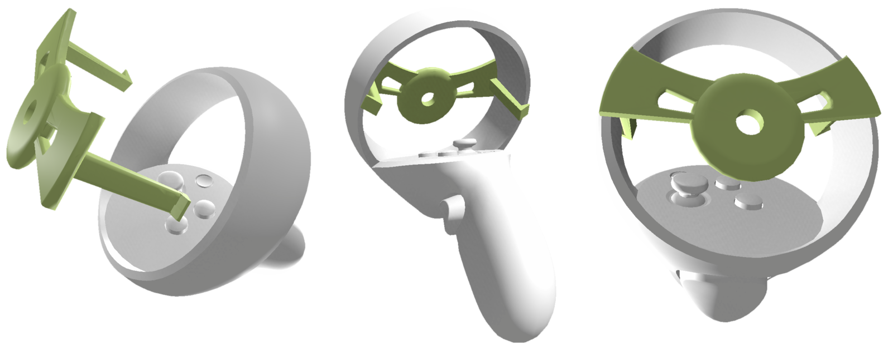
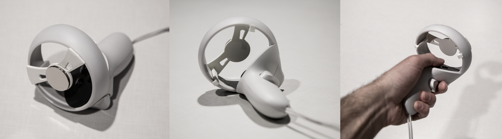
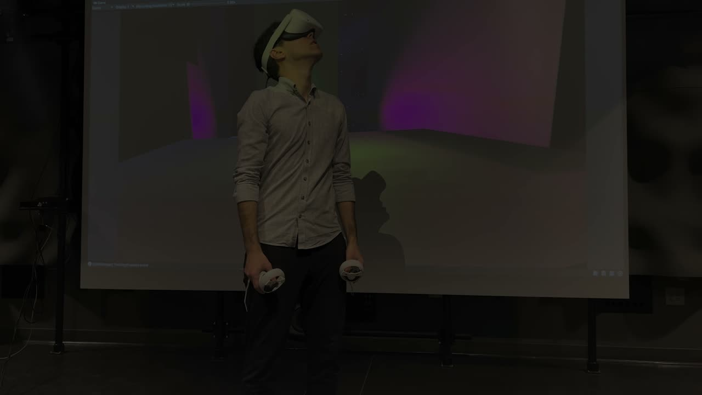

Augmented Touch: A Mounting Adapter for Oculus Touch Controllers that Enables New Hyperreal Instruments
Abstract
In this paper, we discuss our ongoing work to leverage virtual reality and digital fabrication to investigate sensory mappings across the visual, auditory, and haptic modalities in VR, and how such mappings can affect musical expression in this medium. Specifically, we introduce a custom adapter for the Oculus Touch controller that allows it to be augmented with physical parts that can be tracked, visualized, and sonified in VR. This way, a VR instrument can be made to have a physical manifestation that facilitates additional forms of tactile feedback besides those offered by the Touch controller, enabling new forms of musical interaction. We then discuss a case study, where we use the adapter to implement a new VR instrument that integrates the repelling force between neodymium magnets into the controllers. This allows us to imbue the virtual instrument, which is inherently devoid of tactility, with haptic feedback––an essential affordance of many musical instruments.
Author Keywords
VR, fabrication, virtual instrument, mounting adapter, haptics
CCS Concepts
•Applied computing → Sound and music computing; Performing arts; •Human-centered computing → Human computer interaction (HCI) → Interaction paradigms (Virtual Reality)
Introduction
Virtual reality enables us to create systems with arbitrary mechanics and interaction schemes, where laws of material reality can be defied [1]. This allows the NIME researcher to design instruments without physical constraints: an instrument can be suspended in midair or blown up to the scale of a planet. Privileging the audiovisual, the virtuality of these instruments often implies a lack of tactility. While the absence of this quality may constitute, in part, the novelty of a virtual instrument, it is also possible to bring haptics back into the fold by combining virtual reality with digital fabrication.
In our Hyperreal Instruments project, we design instruments that exist in a shared space between real and virtual worlds. By coupling a VR instrument with a physical artifact that is fabricated from the same digital design, we can make it tangible. Likewise, a physical instrument can be imbued with audiovisual qualities that would be impossible to implement outside of VR. To achieve this, we take advantage of the spatial tracking technology built into modern VR systems. Specifically, we fabricate a mounting adapter for the hand-held controllers included in VR systems. This allows us to augment the controllers with physical parts, which can then be visualized and sonified in VR.
In this paper, we introduce the most recent iteration of our mounting adapter and compare it with earlier designs that we reported in previous literature. We then present a use case for this new adapter in the form of a new Hyperreal Instrument that utilizes the repelling force between neodymium magnets to introduce haptic feedback into a VR instrument.
Related Work
Modern VR is increasingly used in the design of musical instruments and systems. An article that surveys the past decade of research into musical extended realities has shown an exponential growth in the use of VR in musical interaction design starting in the mid-2010s, coinciding with the introduction of the Oculus Rift [2]. In a recent example, Willemsen et al. have utilized a 6-degrees-of-freedom haptic device to recreate a tromba marina in VR. A study carried out with this instrument revealed that, despite some features that were deemed frustrating, the instrument has generally afforded an enjoyable experience, where the audio, visual and haptic modalities were found to reinforce each other [3]. In another recent project, Atherton and Wang reported their work on incorporating modern VR into the laptop orchestra idiom, wherein a performer in VR assumes the role of conductor. Through practice-based research, the authors have highlighted the role of multimodal representations in building a connection between real and virtual worlds [4].
The use of electromagnetism in musical interfaces has a rich history in the NIME community. Examples range from the use of electromagnetic actuation in existing instruments [5] to the design of wearable interfaces where magnets are used to activate sensors [6]. In one example, Berdahl et al. implemented a vibrotactile interface for touchscreens [7]. They placed an electrified coil underneath a mobile device to apply a torque to a magnetic token, which is used to interact with the device’s screen. The authors then designed various touchscreen interfaces with haptic feedback for musical applications. In the current project, the primary expressive interaction relies on changing the distance between two hand-held VR controllers that are augmented with magnets of the same polarity. The resulting repelling force between the controllers is leveraged to give the performer a haptic sense of physical resistance and control.
In allowing for the rapid production of geometries that conform precisely to the contours of commercial ready-mades, additive manufacturing can act as an adhesive that couples otherwise disparate geometries and gives rise to novel forms and functions. This practice restores the fluidity of an object's ultimate form, moving beyond the decisions of commercial design teams. Golan Levin recognized early on that digital fabrication may be liberating in its capacity to connect things. This was illustrated in his “Free Universal Construction Kit,'' which consists of adapters that make commercial construction kits, such as Lego and Tinkertoys, interoperable [8].
The augmentation of commercial products for musical applications was also explored by Michon et al., who digitally fabricated physical augmentations that bring new performance possibilities to mobile devices [9]. For instance, the authors transformed a smart phone into a wind instrument by extending the microphone of the device with a 3D-printed mouthpiece. Similarly, Augmented Touch takes advantage of digital fabrication to pick up where the design of a commercial VR system is left off to advance the function of this system towards novel instruments. As we create these new instruments, the underlying work reveals an account of how we adapt our designs to the changing contours of VR controllers through an iterative process.
Design Iterations
We have previously reported our work on bridging VR and fabrication to enable the design of new instruments that span across physical and virtual worlds [10]. The earliest Hyperreal Instrument involved a 3D-printed mounting bracket for the HTC Vive Controller. This bracket, which involves a clamping mechanism around the top side of the HTC Vive controller’s handle, can be seen in Image 1. We used this bracket to design a custom VR instrument, which drew inspiration from percussion and string instruments. This design was used to evaluate the musical affordances of a fully virtual instrument versus one where the virtual design is mapped onto a physical artifact. Whereas a lack of physical obstruction was found preferable in percussive applications, the physical anchor provided by the fabricated parts was more conducive to bowing gestures.


The earliest adapter design for the HTC Vive controller seen on the left. In this instrument, the dowel attached to the adapter is used as an exciter, whereas the laser-cut attachment to the HTC Vive tracker, shown in the middle, acts as the resonator that can be struck or bowed with the exciter. A user performing with the resulting Hyperreal Instrument is seen on the right.
In a subsequent iteration of the Hyperreal Instruments project, we designed an adapter system for the Touch controller that was bundled with the first Oculus Quest headset in early 2019 [11]. We used this adapter to implement a virtualization of a rare Tsuridaiko from the Stearns Collection of Musical Instruments at the University of Michigan. This mounting mechanism relied on the Touch controller’s toroid ring, where IR emitters are embedded. These emitters allow the controller to be tracked by the cameras on the head-mounted display with six degrees of freedom. Since the emitters are placed on the outer surface of the ring, we designed the mounting mechanism with two sides that are clamped to the controller from underneath the ring as shown in Image 2.


The first adapter design for the Oculus Touch controller. The bracket seen on the left is attached to the toroid ring of the controller as seen in the middle image. The image to the right shows an application of the controller augmented with a physical part, which served as a mallet for the virtual recreation of a Tsuridaiko.
Although this second iteration offered a structurally stable mounting mechanism, it also had a few shortcomings. While the weight added by the two-piece design was negligible, the back piece was relatively close to the controller surface with the thumbstick and buttons, interfering with the free movement of the thumb. Furthermore, this design accommodated little margin of error in terms of the alignment of the braces with the two sides of the toroid ring, which are not perfect circles.
Following the recent trends in hand-held controller design for VR systems, such as the Oculus Quest 2 and HP Reverb, and the introduction of the upcoming Sony PSVR 2 system, it is reasonable to expect a continuation of the current controller designs that rely on a ring of IR emitters for positional tracking. While the Touch controllers bundled with the second iteration of the Quest system, introduced in late 2020, are almost identical to the original Touch controllers, there are minor differences in the size and inclination of the toroid between the previous and current controller designs. Despite the negligible difference in size, the slant of the toroid in the new controllers caused the second iteration of the mounting system to leave even less clearance for the thumb.
Augmented Touch
Instead of adapting our previous mounting system for the updated Touch controllers, we decided to implement a major revision to address the shortcomings of the previous design. In the new design of the mounting adapter, two feet that span from the front plate across the inner surface of the toroid click onto the back side of the ring as seen in Image 3. Eliminating the need for a backplate, this solution not only reduces the weight of the mounting adapter, but also alleviates issues pertaining to a lack of clearance for the thumb. Furthermore, this design greatly simplifies the attachment of the adapter to the controller without any fastening. Since the mounting relies on the flex of the two back feet, the adapter necessitates less precision than the previous design while maintaining a substantial level of structural stability. As a result, it will be easier to fine tune this adapter for future controllers that rely on a similar model for positional tracking. The center plate of the adapter is printed with a hole through which a bolt can be fixed to the adapter to attach custom physical augmentations.


Augmented Touch mounting adapter for the Oculus Quest 2 Touch controller.
Use Case
To evaluate the new adapter design, we implemented a new Hyperreal Instrument, which relies on integrating magnets of the same polarity to each controller to introduce a repelling force between them. The instrument is primarily activated by bringing the two controllers closer whilst the magnets afford the performer an increasing amount of haptic feedback. On the one hand, the repelling force between the magnets creates a boundary condition that gives the performer a sense of control. On the other hand, the same force can be unpredictable in ways that create expressive indeterminacies in the performance as demonstrated in Video 1.
Hardware
We first created a design with round pull magnets that are commonly found in department stores. These magnets have quarter-inch mounting holes that allowed us to fix them to the adapter. While two of these magnets on each controller created a strong repelling force between their surface areas, they also bonded to each other quite forcefully on their sides, where the polarities are inverse, due to their half-inch thickness. We therefore switched to thinner neodymium magnets with a much higher surface area to thickness ratio. This allows the repelling force between the magnet surfaces to be exploited more easily without the magnets snapping onto each other on their sides. Furthermore, neodymium magnets offer a stronger magnetic force [12] while adding less weight to the instrument. The magnets were attached to each adapter with double sided tape. The finalized instrument is seen in Image 4.


The Augmented Touch adapter outfitted with neodymium magnets.
Audiovisual Design
The virtual portion of the instrument is implemented in Unity. Using the models of the Oculus Quest 2 Touch Controllers, visual representations of the hand-held controllers are shown to the user in VR. These representations are expanded with additional models and particle systems to visualize the repelling force between the controllers as shown in Video 1. The distance and angle between the controllers are measured to control these visualizations. These variables are also passed to Max via OSC to control a custom synthesizer that sonifies the instrument. In this synthesizer, the distance between the controllers is mapped to the frequency difference between two oscillators. This way, as the controllers are brought closer, the user hears beating artifacts between the oscillators. Due to the repelling force between the magnets attached to the controllers, diminishing the distance between the controllers to bring the oscillators to unison requires extensive physical force.
The summed output of these oscillators is passed through a wavefolder to extend the frequency response of the instrument with additional partials. This output is multiplied with a third oscillator to establish lower partials through amplitude modulation. The frequency of this oscillator is governed by the distance and angle between the controllers. The modulated signal is routed to two delay paths dedicated to each controller. When the delay function is not engaged, these two paths generate the same signal, resulting in monophonic output. Once the user engages the delays using the triggers on the controllers, the paths move out of phase, causing the output to have stereophonic qualities.
The thumb clearance afforded by the new adapter makes the existing interface of the Touch controller, consisting of buttons and a thumbstick, more accessible for use. To showcase this, we used the two buttons on each controller to record and clear a buffer for the left and right channels. Once a buffer is recorded, the thumbstick can be used to change the playback speed of the buffer for the corresponding channel. The performance in Video 1 demonstrates these functions at the 3’22” mark.

▶A performance with the Hyperreal Instrument where the mounting adapter system is used to integrate neodymium magnets into a virtual instrument. As the performer brings the two controllers close to each other, the repelling force between the magnets provides haptic feedback. This force serves both as a physical anchor and a source of uncertainty at very close distances. This video is also accessible at https://youtu.be/imdTKmaPw-E.
Conclusions
In this paper, we presented our ongoing work on combining virtual reality and digital fabrication to design Hyperreal Instruments that exist in the liminal space between physical and virtual worlds. Through an overview of our iterative design process spanning three years, we highlighted the factors that motivated our latest mounting adapter design for the Oculus Quest 2 Touch controllers. This adapter, which allows physical augmentations to the Touch controllers to be imbued with virtual audiovisual qualities in VR, has improved on our previous designs on accounts of its reduced weight, ease of installation, and increased clearance for finger movement. We then presented a new Hyperreal Instrument implemented using this new adapter; this instrument has not only enabled us to explore the use of magnets to introduce haptic feedback to virtual instruments but also informed the refinement of our adapter design. Although it is reasonable to expect VR controllers to evolve over time, we anticipate our latest design to facilitate rapid and lightweight modifications to our adapter in the future.
We plan to continue our evaluation of the new adapter in two ways. First, we will use the adapter to implement new Hyperreal Instruments that require different augmentations of the Touch controllers. This way, we hope to further understand the tensile strength of the new adapter and whether additional anchor points would be necessary for instruments that demand heavier augmentations. Second, we plan to use the instrument described here to carry out a follow-up on the user study reported in our paper on the first Hyperreal Instrument [10]. Whereas that instrument leveraged conventional gestures like striking and bowing, the new instrument affords more idiosyncratic interactions that are not immediately associated with existing performance traditions. We therefore hope to discover the types of musical expressions that the new instrument may prompt among performers and refine our sound engine accordingly. Furthermore, this study will put the adapter’s tensile strength to test from a more user-centered perspective and reveal potential areas of improvement in our design.
Ethics Statement
The research presented in this paper adheres to the NIME Principles & Code of Practice on Ethical Research. The research effort discussed in this paper did not involve any human participants or animal testing. Furthermore, there are no known financial or non-financial conflicts of interest involved in this research. Although the project presented here does not explicitly engage with accessibility in its current state, the authors plan to leverage the proposed adapter in the design of accessible interfaces for VR in the future.
Citations
- ↩Çamcı, A., Vilaplana, M., & Wang, L. (2020). Exploring the Affordances of VR for Musical Interaction Design with VIMEs. Proceedings of the International Conference on New Interfaces for Musical Expression, 121–126.
- ↩Turchet, L., Hamilton, R., & Çamcı, A. (2021). Music in Extended Realities. IEEE Access, 9, 15810–15832.
- ↩Willemsen, S., Paisa, R., & Serafin, S. (2020). Resurrecting the Tromba Marina: A Bowed Virtual Reality Instrument using Haptic Feedback and Accurate Physical Modelling. 17th Sound and Music Computing Conference, 300–307.
- ↩Atherton, J., & Wang, G. (2020). Curating Perspectives: Incorporating Virtual Reality into Laptop Orchestra Performance. Proceedings of the International Conference on New Interfaces for Musical Expression, 154–159.
- ↩McPherson, A. P., & Kim, Y. E. (2010). Augmenting the Acoustic Piano with Electromagnetic String Actuation and Continuous Key Position Sensing. Proceedings of the International Conference on New Interfaces for Musical Expression, 217–222.
- ↩Cavdir, D., & Wang, G. (2020). Felt sound: A shared musical experience for the deaf and hard of hearing. Proceedings of the International Conference on New Interfaces for Musical Expression, 176–181.
- ↩Berdahl, E., Holmes, D., & Sheffield, E. (2016). Wireless Vibrotactile Tokens for Audio-Haptic Interaction with Touchscreen Interfaces. Proceedings of the International Conference on New Interfaces for Musical Expression, 5–6.
- ↩Stephensen, J. L., & Hansen, L. K. (2015). (In) tangible Arguments about Play, Creativity, and the Political Economy of 3D Printing: The Free Universal Construction Kit. tripleC: Communication, Capitalism & Critique. Open Access Journal for a Global Sustainable Information Society, 13(1), 112–135.
- ↩Michon, R., Smith III, J. O., Wright, M., Chafe, C., Granzow, J., & Wang, G. (2017). Passively augmenting mobile devices towards hybrid musical instrument design. Proceedings of the International Conference on New Interfaces for Musical Expression, 19–24.
- ↩Çamcı, A., & Granzow, J. (2019). Hyperreal Instruments: Bridging VR and Digital Fabrication to Facilitate New Forms of Musical Expression. Leonardo Music Journal, 29, 14–18.
- ↩Granzow, J., & Çamcı, A. (2020). Recreating a Rare Instrument Using VR and Fabrication: A Hyperreal Instrument Case Study. Forum Acousticum, 655–658.
- ↩Jones, N. (2011). Materials science: the pull of stronger magnets. Nature News, 472(7341), 22–23.
- ↩Çamcı, A., & Granzow, J. (2019). Hyperreal Instruments: Bridging VR and Digital Fabrication to Facilitate New Forms of Musical Expression. Leonardo Music Journal, 29, 14–18.